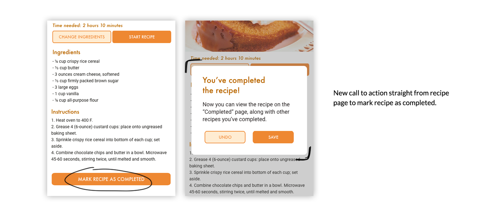

Understanding Dietary Restrictions
Restrictive eating has its costs
We interviewed some people with strict diets about their experiences with finding recipes and cooking in the kitchen. Here are some major pain points:
- Some found it embarrassing or inconvenient to eat out with friends
- There's a risk of cross contamination in other kitchens
- Checking ingredient labels for packaged foods is tedious
- It's difficult to adopt to the new diet and find a variety of food options at first
- Finding diverse recipes was difficult, but there are many replacement options available
The Problem
Individuals with dietary restrictions do not eat and cook with the same level of ease and comfort as those without dietary restrictions.
Ideating
We came up with two app ideas to allow those with dietary restrictions to eat and cook more comfortably.
(1) Shared Pantry:
Users would request and obtain ingredients from other users in the same area. Users would be able to obtain specific ingredients that they might need while meeting new friends with similar diets, share cooking insights, and gain a diet-friendly community.
(2) Recipe Conversions:
Users would be able to find recipes without worrying about dietary constraints. The app would convert certain ingredients to their respective replacement options for each diet.
First Iteration
Converting Ingredients for Diet-friendly users
The shared pantry idea relies too heavily on users to be proactive in sharing ingredients. The vision was too optimistic to carry out-- not many people would willingly offer up their ingredients.
We created Noms, a cooking app that allows home cooks to swap ingredients to create new recipes catered to their specific diets. Like a traditional cooking app, Noms allows cooks to discover recipes and follow along its steps, but through a convenient click of a button, those cooking with dietary restrictions can now also enjoy the same recipes with alternate ingredients.

User Testing
Realistically, is our prototype usable?
To ensure that our designs were usable, we asked our users to complete a series of tasks that revealed how they would interact with our app's different features. We tested three home cooks of different skill levels who cook for a specific diet.

We obtained positive feedback— all three of our users thought that Noms is an interesting idea that allowed people of different diets to have a centralized location for recipes. However, we did notice three big usability errors in our prototype.
Redesign 1: Favorites Icon
Original: Star Icon, No feedback
All three users found that the favorites button, or the star icon, was confusing.

Redesign: Heart Icon, More feedback
We decided to change the star icon to a heart icon to reflect the idea of “favorite recipes” better. Most people correlate “favorite” to having positive and strong feelings for something, and this is typically represented through a heart shape.

Redesign 2: Marking a Recipe as Complete
Original: Couldn't complete until each step was completed.
Two out of three users didn’t complete the actual recipe by going through each and every step.

Redesign: Call to action on the recipe page itself.
We speculate that this issue was because home cooks of different skill levels need different levels of guidance in terms of recipes. Those with more experience can complete a recipe with no extra help, but for inexperienced cooks, visual aids through each step would make the process a lot smoother.
Redesign 3: Finding a recipe
Original: Card design, a lot of scrolling
All of the users scrolled for a while to see all the recipes before choosing a recipe on the home page.

Redesign: Grid design, less scrolling
To fix this issue, we changed the layout of our home page to declutter it. We simplified the recipe cards, giving just enough information for users to want to click into it. After clicking into each card, then we displayed more information about the recipe.
A/B Testing
Card vs Grid design
Some users complained about the amount of scrolling, so we came up with a grid design for the recipes on the home page. However, we weren’t too confident in the redesign— How do we want users to search for specific recipes? We wanted to compare the two versions of the home page:
Version 1: Card design
Version 2: Grid design
Search with a filter, choosing between different diets, favorite recipes, and/or completed recipes. Recipes are displayed in a grid, where many more recipes are shown at once.
From our chi-square test and informal feedback, we learned:
Final Prototype
The Best of Both Worlds
Through our tests and informal feedback, we decided to combine the two options. We would incorporate a search bar and a filter option while displaying the recipes in a grid format. We hope that this version would reduce the chance of error of clicking into a wrong recipe, while ensuring that users can find recipes more efficiently.

At the poster session, our team received an award for Best Problem Statement. We also received valuable feedback from design professionals about our project.
Future Plans
Future plans involve conducting more tests on a different user base. It was brought to our attention that some older users who struggle with diabetes might prefer to see nutritional information or prefer a bigger card layout. Conducting additional tests on senior users or people with different dietary restrictions would allow us to make Noms more friendly for its appropriate user group.